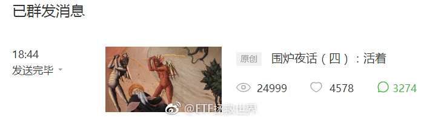

4000留言。我毛估估，这个公众号五年内不可能再有文章打破这个留言记录了……我会每条都看的。 评论配图@ETF拯救世界:不行了，今天真看不完了。还剩1000条没看。明天继续看吧……老年人要早点睡觉去了…… 
回复@要么唯一要么第一:这不是“说”。而是跟几万人一起“做”的。计划了解一下。//@要么唯一要么第一:你看跌，涨了又说自己加仓了//@ETF拯救世界:回复@小马快乐跑:气什么。我们仓位越加越重，7月以来一周多时间已经连发两车，买的这么低，今天净值将大幅反弹，开心都来不及啊。@ETF拯救世界:再跟大家分享一下牛熊市大多数人的想法。在牛市中，绝大多数人都不信股市还会跌到一个很低的地方。怎么看都不可能，一路向上，情绪激昂。怎么可能跌？哪怕跌，也一定是到更高的地方以后才会跌。熊市中则相反。绝大多数人甚至想象不出牛市的样子。因为各种因素都太差了，差到没人相信未来股市会走牛，更何况股市还会疯狂。
回复@小马快乐跑:气什么。我们仓位越加越重，7月以来一周多时间已经连发两车，买的这么低，今天净值将大幅反弹，开心都来不及啊。//@小马快乐跑:怎么不跌了，好气哟@ETF拯救世界:再跟大家分享一下牛熊市大多数人的想法。在牛市中，绝大多数人都不信股市还会跌到一个很低的地方。怎么看都不可能，一路向上，情绪激昂。怎么可能跌？哪怕跌，也一定是到更高的地方以后才会跌。熊市中则相反。绝大多数人甚至想象不出牛市的样子。因为各种因素都太差了，差到没人相信未来股市会走牛，更何况股市还会疯狂。
再跟大家分享一下牛熊市大多数人的想法。在牛市中，绝大多数人都不信股市还会跌到一个很低的地方。怎么看都不可能，一路向上，情绪激昂。怎么可能跌？哪怕跌，也一定是到更高的地方以后才会跌。熊市中则相反。绝大多数人甚至想象不出牛市的样子。因为各种因素都太差了，差到没人相信未来股市会走牛，更何况股市还会疯狂。
回复@王者华山:2008年，中证500最低1488，目前涨幅241%。期间最高涨到11616，涨幅680%。目前500估值与2008年次低点估值几乎一致。可自行判断未来十年A股会否有可能出现哪怕一次大牛市。//@王者华山:2008年时，有没有人说这些话？@ETF拯救世界:这次反弹到多少计划会创新高？我初步估计3000-3200？这就是投资的乐趣。你不用管股市涨不涨，只要有波动，你就能让自己的成本越来越低，筹码越来越多，最后赚的也越来越多。想要赔钱也很简单，反着做就可以：高位越买越多，低位开始卖。你以为我们低位买的是谁的筹码？
回复@安小之18:未来怎么走谁也不能确定。大趋势的判断需要底部走出样子来才能看出。不要肯定的认为这是反弹或者反转。设计好应对各种可能的策略到时候执行就可以。//@安小之18:亲们，是不是说到3000多点还会下跌回来？@ETF拯救世界:这次反弹到多少计划会创新高？我初步估计3000-3200？这就是投资的乐趣。你不用管股市涨不涨，只要有波动，你就能让自己的成本越来越低，筹码越来越多，最后赚的也越来越多。想要赔钱也很简单，反着做就可以：高位越买越多，低位开始卖。你以为我们低位买的是谁的筹码？
回复@微鲸发展:我不信A股会一直在2000多点。这是不可能的。十年后，2028年，300、500如果没有五倍以上涨幅我会比较惊讶。//@微鲸发展:就怕这个筹码终究不值钱@ETF拯救世界:这次反弹到多少计划会创新高？我初步估计3000-3200？这就是投资的乐趣。你不用管股市涨不涨，只要有波动，你就能让自己的成本越来越低，筹码越来越多，最后赚的也越来越多。想要赔钱也很简单，反着做就可以：高位越买越多，低位开始卖。你以为我们低位买的是谁的筹码？
这次反弹到多少计划会创新高？我初步估计3000-3200？这就是投资的乐趣。你不用管股市涨不涨，只要有波动，你就能让自己的成本越来越低，筹码越来越多，最后赚的也越来越多。想要赔钱也很简单，反着做就可以：高位越买越多，低位开始卖。你以为我们低位买的是谁的筹码？